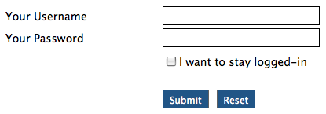

Getting Started
Please look at this simple form example to see how the Form Generation Library works and how easy it is to set-up a form in just a couple of minutes. To gain more insight on all features please continue to read through the Introduction as well as the General Topics. You will also find valuable information in the Form Elements and Methods sections of this User Guide.
Controller
class Login extends Controller {
function Login()
{
parent::Controller();
}
function index()
{
$this->load->library('form'); // first of all we have to load the library
$this->form // then we fill the form with elements
->open('login')
->text('username', 'Your Username', 'trim|alpha_numeric|max_length[30]|xss_clean')
->pass('password', 'Your Password', 'trim|alpha_numeric|max_length[20]|xss_clean')
->indent(200)
->checkbox('loggedin', 'yes', 'I want to stay logged-in')
->submit()
->reset()
->onsuccess('redirect', 'login/success');
$data['form'] = $this->form->get(); // this returns the validated form as a string
$data['errors'] = $this->form->errors; // this returns validation errors as a string
$this->load->view('login_view', $data);
}
function success()
{
$this->load->view('login_success');
}
}
View
<!-- HTML --> <h1>Login Form</h1> <?=$errors?> <?=$form?> <!-- MORE HTML -->With these few lines you can add a complete form including validation and error handling. Now let's take a look at the form code output after the view was loaded and echoed to the browser:
<form action="http://localhost/dev/formgenlib/login" method="post">
<label for="username">Your Username</label><input type="text" name="username" value="" maxlength="30" id="username" /><br />
<label for="password">Your Password</label><input type="password" name="password" value="" maxlength="20" id="password" /><br />
<div style="float:left;width:200px"> </div>
<div style="float:left">
<input type="checkbox" name="loggedin[]" value="yes" class="check" id="bae2b" /><label for="bae2b" class="check">I want to stay logged-in</label><br /><br />
<input type="submit" name="submit" value="Submit" class="button" id="submit" /><input type="reset" name="reset" value="Reset" class="button" id="reset" style="margin-left:10px" />
</div>
<div style="clear:both"></div>
</form>
And with some smart stylesheet and config file settings this is how it would look like in your browser: